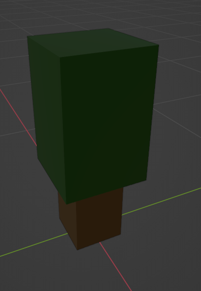

In City Skylines the maps are already prebuilt and that can be nice but I opted for procedural Terrain Instead. To do that i used perlin noise that some people say are great to proceduraly generate terrain and other dont. So after some programming i came up with a working system. I desiced to make it look voxel like even it isent 100% voxels. But after this it all looked to simler so i added in some colors to make it look better. Lastly i added in flowers as well on the ground to get an extra pop.

The water was another intresting part but I manged to solve it pretty quickly. I used a tutorial i found on making water foam on collisions. It really dosent work with collisions but it dosent matter really. Made it move up and down and it works great.
The resoures i desiced on using for now is oil, ores and trees. Trees being extra important becasue they give life to the enviorment. Making some tree prefabs and some code it worked well exept the framerate dropped from around 400 to 30. But reducing the number of draw calls I have made it up to 400 agian. But when the game realses I am problley going to lock the framerate at 60.
